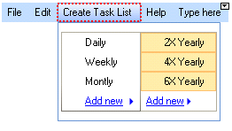

RadMenuItem
The following controls are used to create a menu structure:
RadMenuItem
RadMenuHeaderItem
RadMenuComboItem
RadMenuSeparatorItem
RadMenuContentItem
RadMenuItem
The RadMenuItem represents a standard menu item. Some of its properties include:
AutoSizeMode__indicates how the menu item will be sized and can be __FitToAvailableSize, WrapAroundChildren or Auto.
AngleTransform sets the angle offset from horizontal with which the item will be displayed.
__CommandBinding__allows you to configure keyboard shortcuts to fire a given menu item. See the Getting Started topic for an example.
DisplayStyle lets you choose whether to show an image, text, or both on the item.
DescriptionText__contains the text for the description that appears just below the __Text. __DescriptionFont__controls the font characteristics of the __DescriptionText__display. See the example menu item in the figure below.

Enabled__when set to false shows the menu item as grayed out and does not react to mouse clicks. To allow non-standard painting when the menu item is not enabled set the __UseDefaultDisabledPaint__property to false and then use the __Visual Style Builder to customize the appearance of this state.
FlipText flips the text of the item vertically if set to True.
BackColor and ForeColor set the colors of the background and text.
Font sets the font and size of the item text.
HintText sets the text to appear at the right side of the menu item, such as Ctrl+N for New.
Image, ImageIndex, and ImageKey let you assign an image to display on the item.
IsChecked controls whether a check mark is displayed on the item.
TextImageRelation controls the relationship between the text and image displayed on the item.
Text specifies the text to show on the item.
TextOrientation allows you to choose vertical or horizontal text display.
CheckOnClick indicates whether selecting the item should set a check mark.
HasTwoColumnDropDown lets you add a drop-down menu that contains two columns.
IsMainMenuItem indicates that the menu item is an item on the main menu, rather than an item on a drop-down menu.
PopupDirection indicates whether the direction in which the drop-down menu will open will be to the left, right, up, or down.
ShowArrow displays an arrow button on the drop-down menu.
StringAlignment formats the alignment of the text string so it is positioned near, center, or far from the left border of the menu item.
Creating Two Columns on a Drop-Down Menu Item
The HasTwoColumnDropDown property formats a drop-down list into two columns. It is recommended that you set this property to True before you begin to add menu items to the list. This setting lets you view both columns in form designer so you can add new menu items to the appropriate column.

RadMenuComboItem
The RadMenuComboItem allows you to put a drop-down list on a menu. To add items to the combo box work with the Items collection of the RadMenuComboItem.ComboBoxElement property. Because the ComboBoxElement returns a RadDropDownListElement, you can also use data binding to put items in the drop-down list from any data source.
RadMenuContentItem
The RadMenuContentItem is a container control that allows you to build up custom menu items from other controls. You can assign any RadElement based control to the ContentElement property of a RadMenuContentItem. See Nesting Controls in Menu Items for an example.
RadMenuSeparatorItem
The RadMenuSeparatorItem is used to add a horizontal line for visual separation between successive items on a menu.